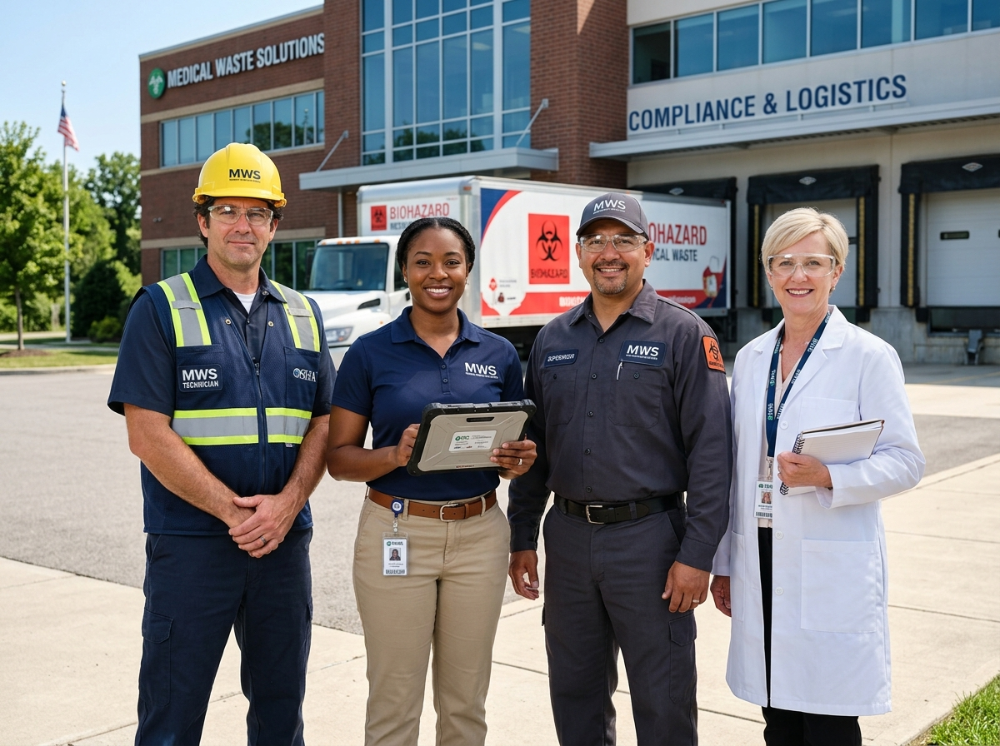

A legacy of safe, compliant, and sustainable medical waste management built on expertise and trust.
Our core values shape every decision, from the technology we invest in to the way we serve our clients.
The safety of healthcare workers, communities, and our own team is non-negotiable. Every protocol is designed with zero-incident operations as the baseline.
We maintain complete transparency in our operations, documentation, and pricing. What we promise is what we deliver — every time, without exception.
We continuously invest in greener treatment technologies and sustainable processes to minimize the environmental footprint of medical waste disposal.

SafeDispose launched with a single processing facility serving local hospitals and clinics in the northeast.
Expanded operations to 25 states with a fleet of DOT-certified vehicles and three processing centers.
Achieved ISO 14001 environmental management certification, reinforcing our commitment to sustainability.
Launched our client compliance dashboard with real-time tracking, digital certificates, and analytics.
Surpassed 2,500 active client facilities with nationwide coverage across all 50 states.